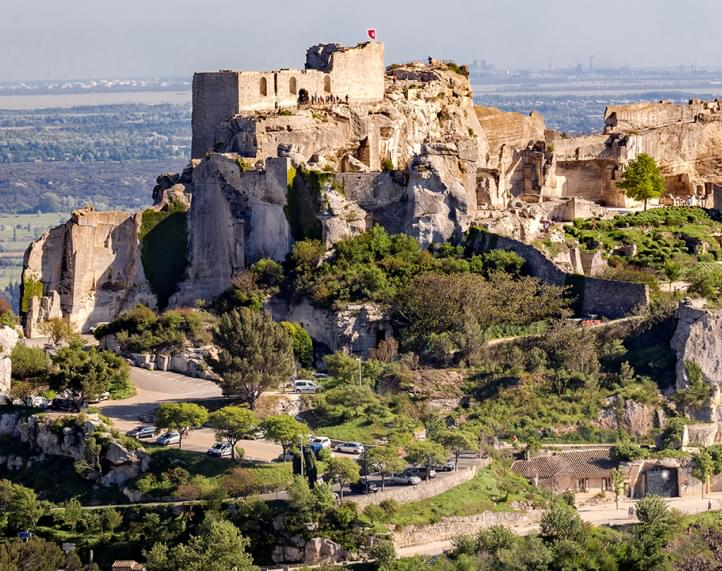

Юго-восток Франции,Прованс – особый регион с ярко выраженной индивидуальностью. Доказательство тому – более двадцати крупных городов сегодняшнего Юга Франции, основанных греками или римлянами. “Самое сердце Прованса», как пишут популярные туристические гиды и журналы, находится вокруг Экс-ан-Прованса Прованс можно найти и на Лазурном Берегу, который исторически является его частью. Приезжая на Лазурный Берег вы попадаете на территорию восточного Прованса. Если немножко удалиться от береговой линии, километров примерно на пятнадцать, и проехаться дорогами, по которым когда-то крестьяне на осликах перевозили цветочное сырье на грасские фабрики, съехать с трассы в сторону Альп, и сразу после различных индустриальных зон – вот он, начинается милый путешественнику Прованс: оливковые рощи, холмы, да, такие живописные, что их запечатлел на своих последних полотнах живший по соседству великий Ренуар. Чуть поодаль замелькают башни колоколен из белого известняка – он добыт в местных каменоломнях, которые эксплуатировались еще древними римлянами. А там, глядишь, пошли виноградники – тоже, кстати, почтенного возраста. Засажены они были еще греками-фокейцами примерно в тот же период, когда был основан Марсель (около 600 года до н.э.)…
Наше путешествие начинается в знаменитом городе Канны. Канны - один из самых известных курортов на Лазурном берегу. Славится проведением всемирноизвестного Канноского фестиваля, на который съезжаются мировые звезды голливудского кинематографа. Завершим мы нащ тур в городе Арль. Арль - один из самых интересных городов Прованса. Арль является воротами в природный заповедник Камарг, который мы обязательно посетим.
Прованс – симбиоз французской роскоши и итальянской беспечности. Сегодня благодаря прованским винам мы можем прикоснуться к средиземноморскому «искусству жить» из любого уголка мира. История винодельческого Прованса начинается в 600 году до нашей эры, когда сюда пришли греки из Фокеи, античного города, существовавшего на территории современной Турции. Они основали два крупных поселения – Массалию и Никайю, сегодняшние мегаполисы Марсель и Ниццу, и привезли с собой виноградную лозу. Прованс по праву считается самым первым винным регионом Франции. Своим сегодняшним успехом Прованс во многом обязан одному человеку – Саше Лишину, бордосцу с русскими корнями и американским мировоззрением. Именно он в середине 2000-х годов создал моду на розе, выпустив на рынок Garrus – премиальное розовое вино, моментально вскружившее голову нуворишам Лазурного берега. Базовое вино Лишина Whispering Angel быстро стало хитом на американском рынке благодаря цепкому, запоминающемуся названию и элегантной, чувственной бутылке. Упаковка, кстати, была изюминкой прованских вин еще до Лишина. Несмотря на то, что львиная доля вин Прованса розовые, здесь производят прекрасные красные и белые вина.
Пляж, солнце, море, и красота вокруг — это все Прованс! Прекрасную природу дополняют не менее прекрасные города, от солнечного и аристократичного Лазурного берега до могучих стен папского дворца Авиньона. Можно съездить в живописные горные деревушки Люберона, посетить один из знаменитых провансальских рынков, где попробовать местные вкусняшки и прикупить сувениров, можно отведать прекрасного провансальского розового вина в одном из многочисленных винных погребов, В Провансе расположен один из самых зрелищных замков Франции, даже в разрушенном состоянии — Les Baux-de-Provence впечатляет масштабами даже потеряв большую часть своих стен. Ну и своими глазами увидеть те красоты, что так вдохновляли Ван Гога, Гогена, Сезанна, Ренуара, Матисса и других художников.
Прованс находится на перекрестке культур – французской, итальянской, каталанской и магрибской. Ницца лишь в 1860 году вошла в состав Франции, а Марсель сегодня больше напоминает североафриканский город. Прованская кухня отличается от французской своей простотой и даже рустичностью. Здесь нет сложных техник и изысканных соусов, но эту бесхитростность компенсируют с лихвой свежесть и качество продуктов. Спелые овощи и фрукты, рыба и морепродукты, ягненок и козий сыр, много пряных трав, маслин, чеснока и оливкового масла – вот что представляет из себя кухня Французской Ривьеры. Оглядываясь на итальянское прошлое, здесь, как нигде во Франции, любят пиццы. Луковый пирог «писсаладьер» и нутовая лепешка «сокка» – любимые закуски местных. Отсюда же родом и всем известный салат Нисуаз с зеленой фасолью, помидорами, тунцом и вареным яйцом, и увековеченный одноименным мультфильмом рататуй, и чесночный соус айоли, прародитель майонеза. Местную кухню не назвать легкой, но пряности, ароматности и яркости вкусов ей не занимать!


Ты побываешь в лучших местах Прованса, попробуешь прованскую кухню, спустишься в старинные винные погребы на дигистуцию лучших французских вин. Проведи свой отпуск вместе с нами. Исполняй мечты вместе с TourTOfrance
Оставить заявку